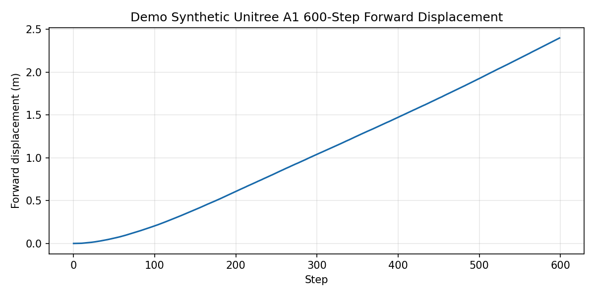
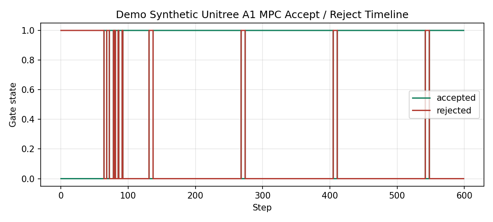
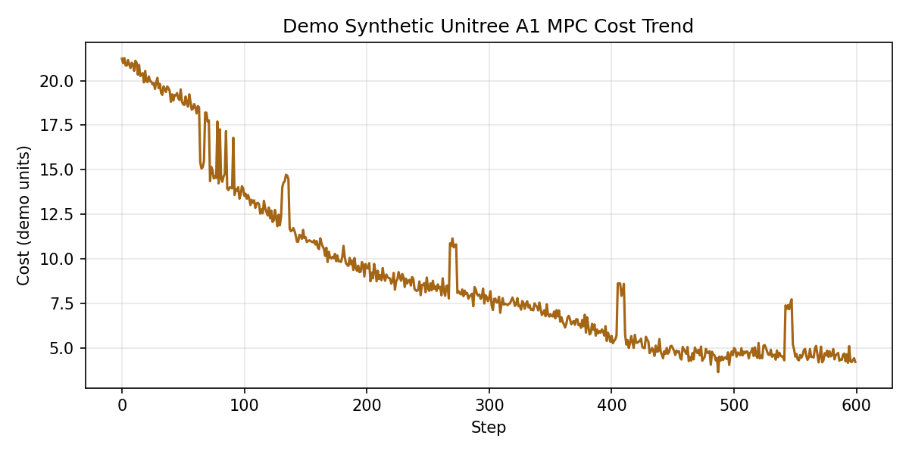

Unitree A1 仿真控制展示
面向中文岗位投递的公开展示页：用 synthetic/demo 数据复现机器人日志解析、PPO 策略指标、MPC 风格诊断、图表生成和边界说明，不展示真实硬件日志或非公开源码。
核心指标
以下数值均来自 sanitized synthetic/demo 数据和公开展示脚本，只用于说明分析流程与工程表达方式，不代表真实 Unitree A1 硬件实验结果。
Unitree A1展示对象与日志字段围绕 A1 机器人命名，但数据为合成 demo。
600 steps短时域合成序列，用于展示解析、指标计算与可视化流程。
+0.9338 mPPO policy 展示指标；synthetic/demo 边界，不是硬件成绩。
+0.9339 mhardcoded baseline 展示指标；仅用于对照叙事。
~872 step失败窗口作为边界说明：长时域稳定性未在公开 demo 中宣称解决。
展示图表
Forward displacement

600 step 前向位移曲线，用于说明日志到指标再到图表的路径。
MPC accept / reject

MPC 风格 accept/reject 诊断图，不代表生产求解器。
Cost trend

synthetic cost trend，用于解释收敛趋势可视化。
这个页面展示什么
合成日志
生成 600 step 的 Unitree A1 demo CSV，用于展示数据接口和状态字段设计。
生成 600 step 的 Unitree A1 demo CSV，用于展示数据接口和状态字段设计。
解析与校验
对 CSV 字段做 schema 检查，缺字段时给出清晰错误。
对 CSV 字段做 schema 检查，缺字段时给出清晰错误。
指标计算
计算前向位移、速度跟踪误差、姿态、支撑力、接触占空比、MPC accept/reject 和 cost trend。
计算前向位移、速度跟踪误差、姿态、支撑力、接触占空比、MPC accept/reject 和 cost trend。
可视化
生成面试可讲的 demo/synthetic 图表，不包含真实私有实验数据。
生成面试可讲的 demo/synthetic 图表，不包含真实私有实验数据。
毕设进度与边界
gantt
title Unitree A1 Sanitized Showcase Roadmap
dateFormat YYYY-MM-DD
axisFormat %m-%d
section Public Demo
Synthetic data schema :done, a1, 2026-05-01, 2d
Parser and metrics :done, a2, after a1, 3d
Figure generation :done, a3, after a2, 2d
Docs and interview notes :done, a4, after a3, 2d
section Explicit Boundaries
Long-horizon robustness :active, b1, 2026-05-10, 4d
Real robot validation :crit, b2, 2026-05-14, 4d
Door task transfer :crit, b3, 2026-05-18, 4d
项目状态矩阵
| 模块 | 公开展示状态 | 边界说明 |
|---|---|---|
| Unitree A1 数据接口 | 已用 synthetic CSV 展示 | 不是真实机器人遥测 |
| 日志解析与指标 | 可运行，有测试覆盖 | 不是私有日志格式解析器 |
| MPC 风格诊断 | 展示 accept/reject、cost、support force 风格字段 | 不是生产 MPC 求解器 |
| 短时域 600 steps 分析 | 用于展示分析流程 | 不声明真实实验结论 |
| 长时域鲁棒性 | 作为限制说明 | 不宣称已解决 |
| 真实机器人部署 | 不在公开 demo 范围 | 无硬件部署声明 |
本地运行
pip install -e ".[test]"
python scripts/run_demo_pipeline.py
pytest
技术栈
Python
pandas
NumPy
matplotlib
pytest
MPC diagnostics
Unitree A1
合规边界
该仓库是 sanitized/demo showcase，不是原始私有项目。仓库不包含真实机器人日志、checkpoint、受保护源码、内部路径或硬件验证结论。所有图表和指标均来自合成 demo 数据。